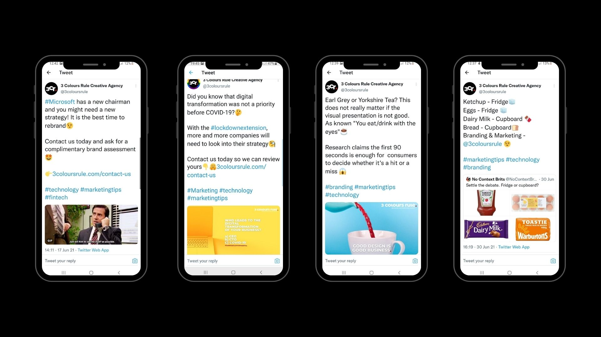
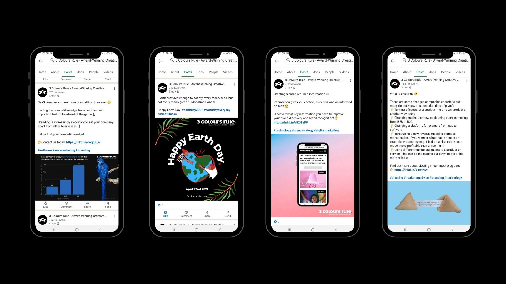
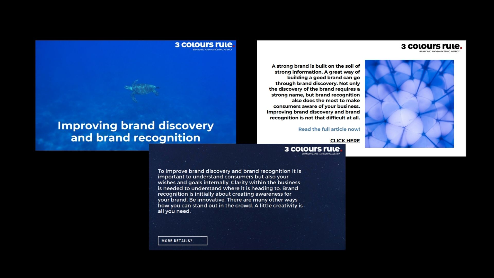

During my time at 3 Colours Rule Ltd., I was managing the social media of the agency which included content creation as well.
Hereby, after deep research, the agency was mainly active on LinkedIn, Instagram, Twitter & Google My Business. After I joined the agency, we were also trying out Pinterest to gain awareness.
Tweets - @3coloursrule
LinkedIn Posts - @3coloursrule
As part of the content distribution strategy, created by me, I turned blogpost into presentations and utilised Slideshare to increase website traffic - @3coloursrule
During my time at 3 Colours Rule, the KPIs improved. On average, the content interactions increased by 80% and the reach improved by 50%. The Website traffic increased by over 400% with a 63% rise in session durations. Being new on Pinterest, I was able to gain an audience of around 5k people within 2 months.